04 · Reports

Overview Performa Penjualan 12 Bulan
Sebelum menyentuh data, pahami dulu bisnisnya. Siapa mereka, apa masalahnya, dan kenapa urgent.
Regional Klinik
Jakarta · Tangerang · Bekasi · Surabaya
Total Pasien Baru
Curug · Tambora · Tanah Abang
Transaksi
Clean data
Klinik Outlet
Cideng, Karawaci, Gading Serpong
Laba Bersih 2025 Physiorehab dari tahun 2024
Rp 895,3 Juta
Laba Bersih per Cabang
Bekasi, Meruya dan Surabaya Samator tidak genap 1 tahun, tapi Gading Serpong bisa melampaui Laba bersih cabang matang.
Distribusi Channel
WhatsApp/IG dan Teman/Keluarga memperlihatkan kontras utama: Iklan digital mendatangkan volume tapi menguras margin, sementara kepuasan pelayanan mendatangkan volume secara murah.
Pola Transaksi Bulanan
Mengingat lonjakan besar di Q4 (terutama November-Desember), pastikan infrastruktur (stok barang, server/sistem, dan layanan pelanggan) siap menghadapi lonjakan trafik yang tinggi.
Top Pasien New (area)
Kebayoran Baru (648 pasien baru) dan Cilandak (639 pasien baru) adalah pusat utama masuknya pasien baru. Ini menunjukkan bahwa penetrasi brand atau efektivitas pemasaran di wilayah Jakarta Selatan sangat mendominasi.